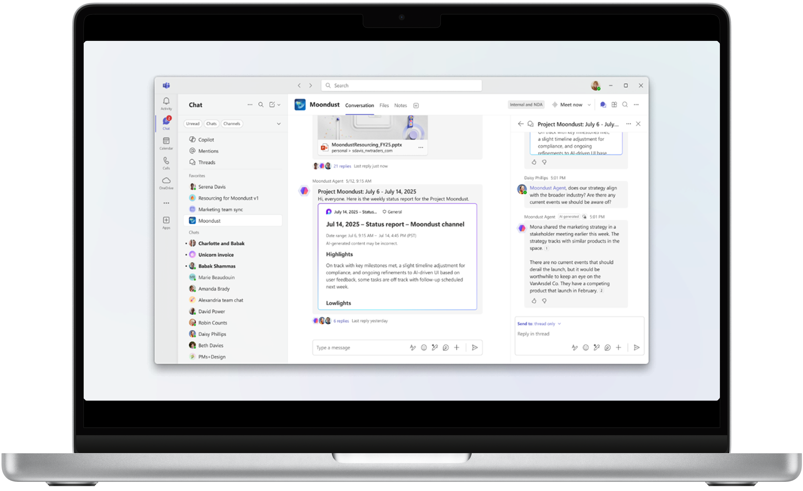
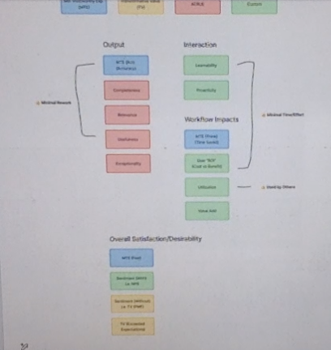

Adoption, Trust, and Workflow Integration for a Virtual Teammate

Channel Agent was an AI-powered experience in Microsoft Teams designed to help teams collaborate and alleviate administrative burden. The vision was a virtual teammate that was grounded in shared context and could perform tasks, but in this initial version, Channel Agent's first skill was to generate status reports.
As the product approached R0 (Ring 0), the team needed to understand whether the experience was ready for early adoption, identify barriers to usage, and gather insights that could inform future product direction.
I worked alongside the lead researcher for Channel Agent. We split sessions but I led research planning, facilitated the cross-functional alignment workshop, conducted beta research with early users, synthesized findings, and translated insights into product recommendations.
The purose of this research was to identify priorities for before and after the next release.
Key research questions included:
I combined cross-functional workshops and qualitative beta research to understand usability challenges, adoption barriers, and opportunities to improve the AI experience.
I facilitated an end-to-end workshop with Product, Design, and Engineering partners to evaluate launch readiness and uncover risks that may not have been identified through AI-as-a-judge evaluation alone.
The workshop helped the team:

As AI-powered experiences were still emerging, teams across Microsoft were approaching evaluation in different ways and measuring similar concepts in different ways (e.g. accuracy, time saved, etc.).
I consolidated the metric frameworks that were most relevant to us, wanting to reuse where possible for consistency and comparability. These included metrics such as accuracy, relevance, satisfaction, trustworthiness, etc.
I then incorporated product-specific measures based on project objectives and user goals (gleaned from previous generative research), including status report utilization, level of customization required, sentiment about proactivity level, etc.
I included these as questions on a survey which we administered as part of our beta research.
I conducted onboarding sessions with early users to capture the first use experience in real time, as well as follow-up longitudinal interviews to get feedback after some usage. As with any non-deterministic experience, we needed to evaluate this experience in a live environment. This usually brings recruitment challenges, but as this also involved group usage, it was even more challenging. Given these challenges, we conducted and analyzed sessions on a rolling basis.
We explored:
New users required guidance at almost every step due to usability issues including:
Users had concerns about permissions, knowledge sources, and what information the AI could access within collaborative spaces. They also did not trust the Status Report enough yet to rely on it.
Melding Gen AI workflows in a collaborative context provided some challenges which showed us a need to recalibrate including:
I synthesized research findings and shared them with stakeholders. The findings gained attention from senior leadership and helped drive conversations around improving the AI experience.
Research influenced product decisions including:
And the other issues that surfaced (which may not have been as straightforward to solve) were also now on the radar for further discussion.
This project reinforced that successful AI products require more than technical capability. Users need to understand the experience, trust the system, and confidently integrate AI into their existing workflows.